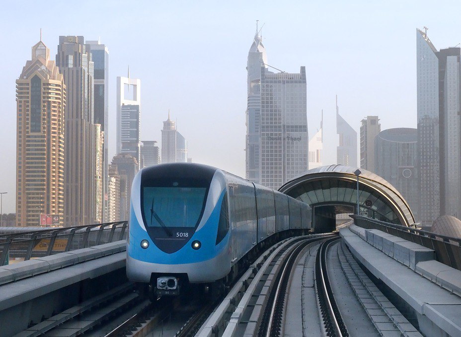
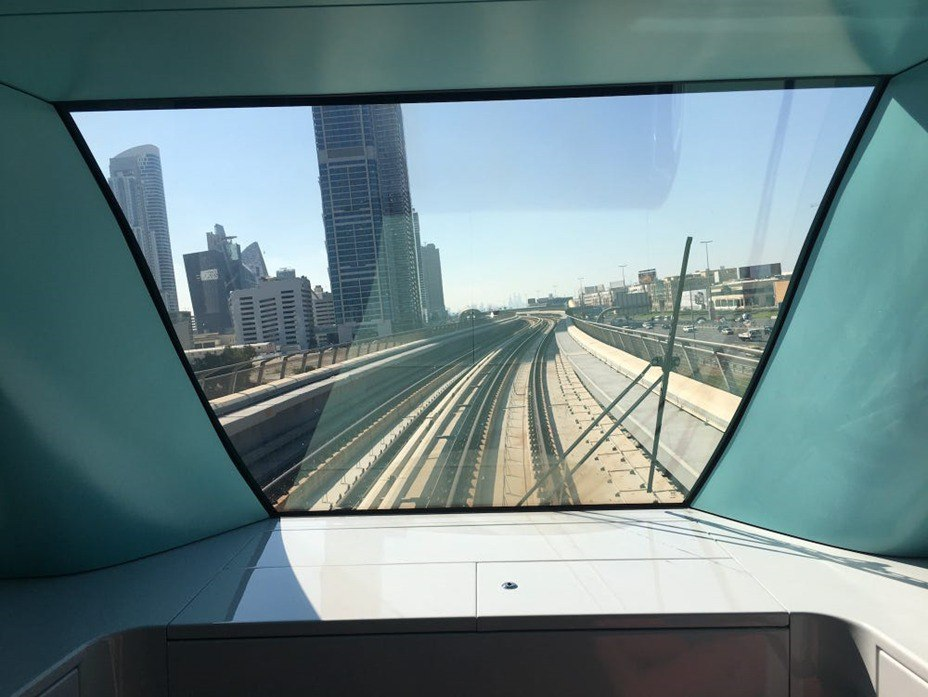
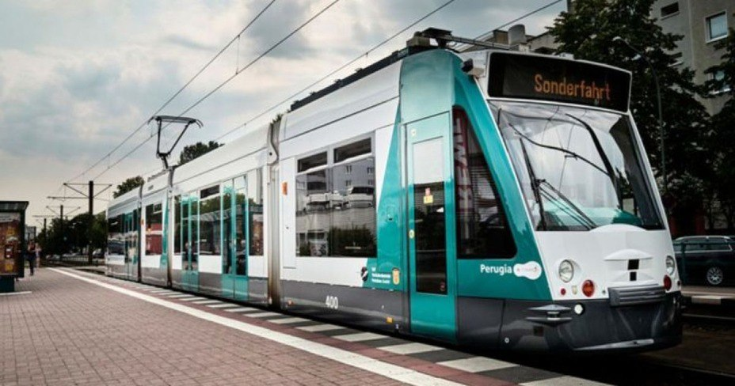

Метро Дубая


Золотой класс метро Дубая
Самым интересным фактом в железнодорожном общественном транспорте, Дубая мне показалось то, что у пассажиров есть возможность смотреть на город и пустыню из переднего окна, то есть оттуда, где в большинстве поездов находится недоступная кабина машиниста. Разумеется, в полностью без-машинистском метро Дубая её нет.
Германские трамваи
По соображениям безопасности железнодорожного общественного транспорта Германии в кабине трамвая находится водитель, но трамвай движется под управлением компьютера. Следуя по шоссе протяженностью 6 километров, он пересекает несколько перекрестков и входит в повороты, по словам разработчиков. Он находится в городе Потсдаме.

Потсдамский трамвай